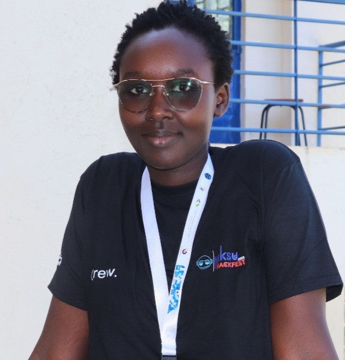

Data Analyst · Finance & Statistics · Growing in the Data World
I find patterns where others see noise. With a background in Mathematics and a natural pull toward finance and statistics, I'm building real skills through real projects - one dataset at a time. Still early, but fully committed.

I have a natural pull toward finance and statistics - there's something satisfying about how numbers can reflect real decisions, real risk, real outcomes. That's where my curiosity started, and it's still where I feel most at home.
But the more I've explored data across different industries, the more I've realized it's everywhere and fascinating in ways I didn't expect. A finance leaning doesn't limit you, it sharpens you. Precision matters. Context matters. The numbers always have to add up.
I'm early in this field and I know it. What I bring is a solid mathematical foundation from my degree, real project experience including a data analyst internship at KRA, and the discipline to keep building - through certifications, portfolio projects, and learning in public.
Executive analytics dashboard for a Kenyan SACCO tracking loan portfolio health, member savings behaviour, and credit risk across 4 branches - built entirely in Excel with Power Query, Power Pivot, and DAX.
End-to-end analytics project covering data modelling, KPI engineering, satisfaction scoring, agent benchmarking, and demand forecasting across 15,000 bookings and 10,000 customers.
Analysed a simulated loan application pipeline across 5 funnel stages, 413 applications, and 4 customer segments using SQL Server to identify drop-off points and revenue at risk.
End-to-end Power BI solution for a hospitality group analysing 132,939 bookings across 20 properties in 4 Indian cities. Built on a star schema with 16 custom DAX measures tracking revenue, occupancy, ADR, RevPAR, realisation rate, and cancellations.
4-page executive KPI dashboard for a simulated multi-regional retail business giving C-suite visibility into revenue, gross profit, budget attainment, and return rates across 5 regions and 5 product categories.
Exploratory data analysis on patient health and lifestyle data to identify key risk drivers that could support targeted wellness programmes.
Scraped 10 seasons of Formula 1 race data from a live API, cleaned and engineered features, and performed EDA to uncover driver dominance patterns, constructor power shifts, and the statistical relationship between qualifying position and race outcome.
Interactive two-dashboard HR analytics solution analysing 8,950 employee records across 7 departments. Covers workforce overview, gender and education demographics, salary equity analysis, and a filterable employee directory - localised for the Kenyan context.
Open to roles, collaborations, mentorship, or just a good conversation about data. I'll always reply.
Want my full CV?
View CV